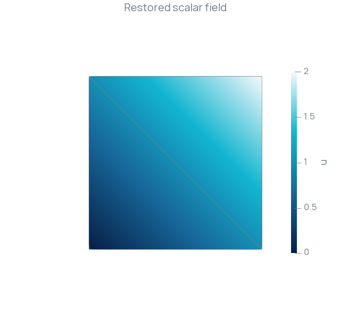

Saving and reloading an MFEM field
Check a mesh and scalar field after a file round trip.
Mesh, space and field
A finite element field is interpreted through its mesh and finite element space. The MFEM mesh file stores the geometry and connectivity; the grid function file stores the finite element collection, vector dimension, ordering and coefficients.
This example saves the affine field on the unit square, reloads both files and evaluates the restored field at cell centroids. A scalar space represents this field exactly up to floating-point arithmetic.
Construct the mesh
Four vertices and two triangles describe the square. The explicit builder makes the element connectivity visible in this small example.
Mesh mesh = Mesh<Context::Local>::Builder() .initialize(2) .nodes(4) .vertex({0, 0}) .vertex({1, 0}) .vertex({0, 1}) .vertex({1, 1}) .polytope(Polytope::Type::Triangle, {0, 1, 2}) .polytope(Polytope::Type::Triangle, {1, 3, 2}) .finalize();
Save and reload the field
Interpolation supplies the coefficients in the selected space. Save the mesh and field as a pair, then construct the restored space on the loaded mesh before loading its coefficients.
P1 vh(mesh); GridFunction u(vh); u = RealFunction([](const Point& point) { return point.x() + point.y(); }); mesh.save("Square.mfem.mesh", IO::FileFormat::MFEM); u.save("Square.mfem.gf", IO::FileFormat::MFEM);
Mesh loaded; loaded.load("Square.mfem.mesh", IO::FileFormat::MFEM); P1 loadedSpace(loaded); GridFunction restored(loadedSpace); restored.load("Square.mfem.gf", IO::FileFormat::MFEM);
The check evaluates the restored field through physical points. Its tolerance is for this exactly representable affine field.
Real error = 0; for (auto cell = loaded.getCell(); !cell.end(); ++cell) { const Point point(*cell, Math::SpatialPoint{1.0 / 3.0, 1.0 / 3.0}); error = std::max(error, std::abs(restored(point) - point.x() - point.y())); } constexpr Real tolerance = 1e-12; const bool valid = loaded.getVertexCount() == 4 && loaded.getCellCount() == 2 && error < tolerance; std::cout << "Maximum cell-centroid error: " << error << std::endl;
Square.xdmf also exports the restored field for ParaView. Open that file, select Apply, color by u and use Surface With Edges to inspect the two triangles. The field ranges from zero to two.

Build and run
Build the RodinIOMFEM target and run it in a scratch directory. The program writes Square.mfem.mesh, Square.mfem.gf and the XDMF/HDF5 visualization files. It returns EXIT_FAILURE if the mesh counts or sampled field values fail their checks.
The complete program is available in MFEM.cpp.